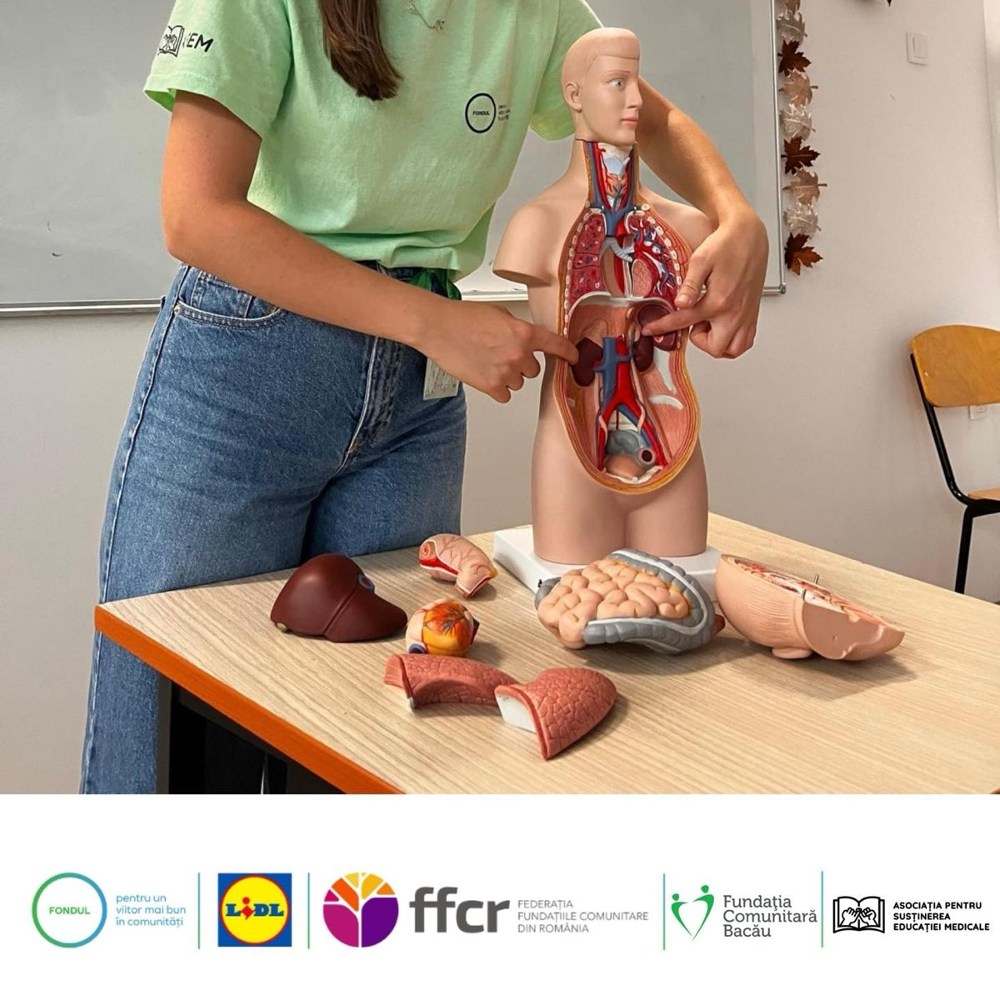
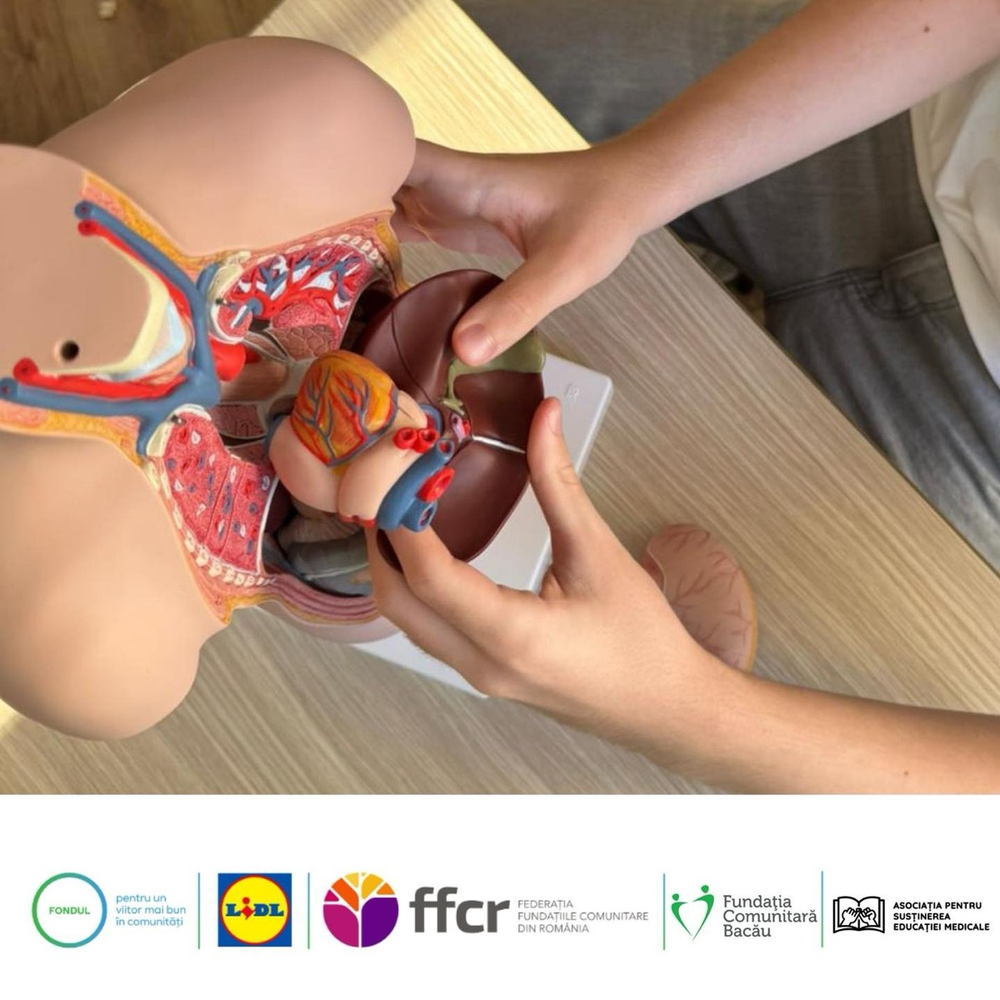
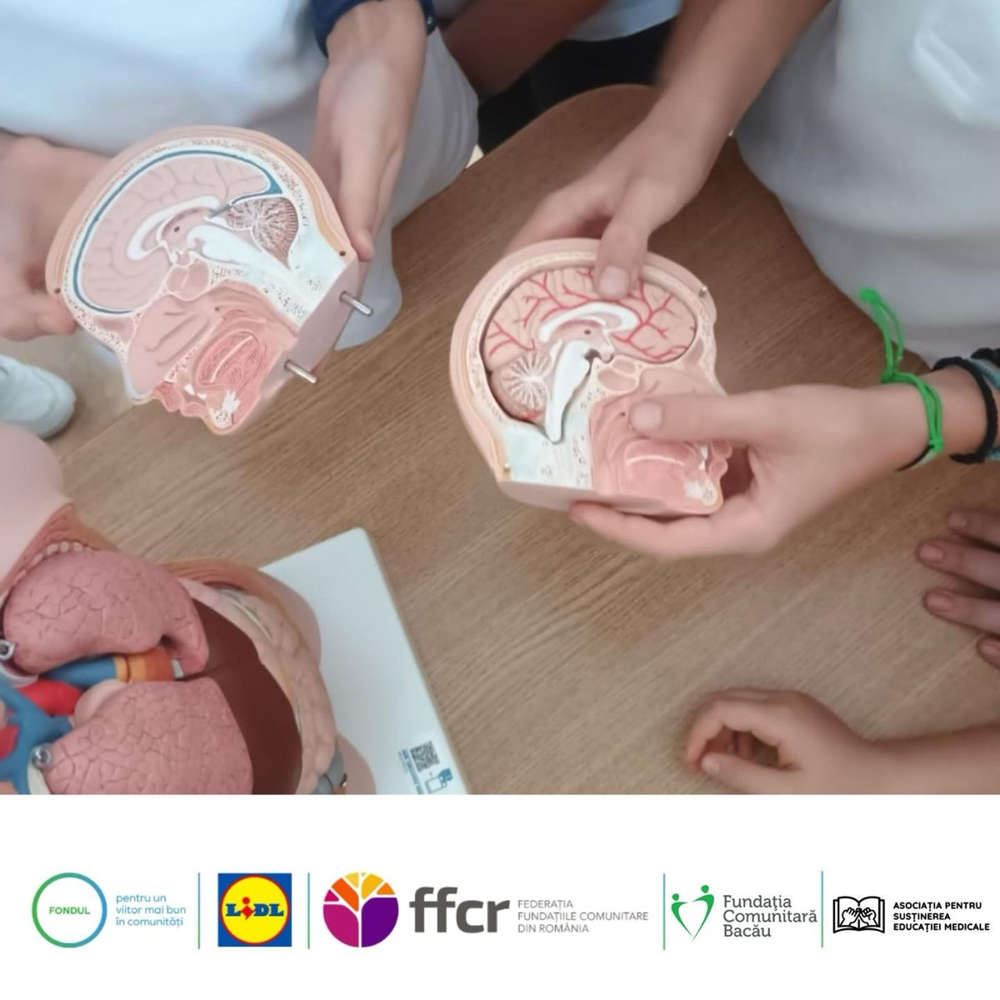
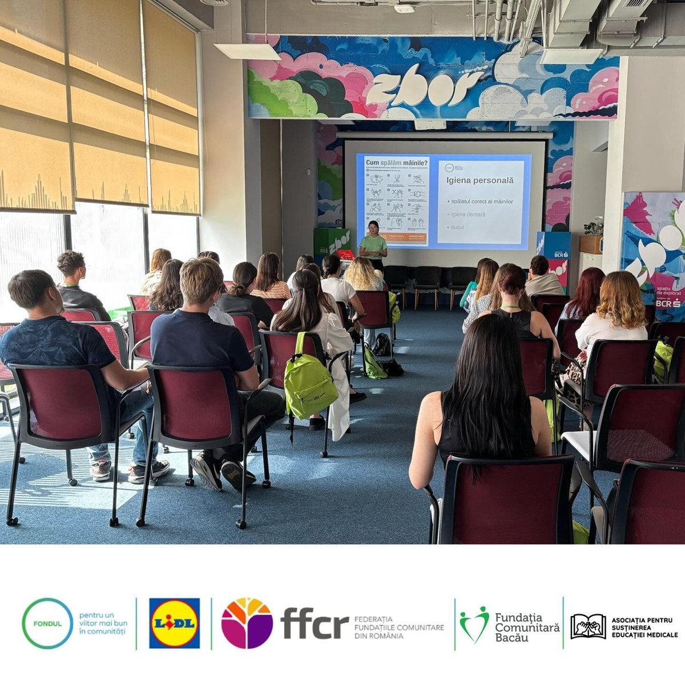

EduMed Start în Sănătate – Bârlad
Educație pentru sănătate pentru elevii de gimnaziu

Indicatori
În perioada iulie–noiembrie 2025, Asociația pentru Susținerea Educației Medicale a implementat în municipiul Bârlad proiectul „EduMed START în Sănătate”, o inițiativă educațională dedicată elevilor de gimnaziu, menită să dezvolte cunoștințe esențiale de igienă, nutriție, anatomie și educație pentru sănătate prin ateliere interactive și accesibile.
Desfășurare și scop
Proiectul a urmărit să le ofere elevilor de gimnaziu informații validate științific și deprinderi practice pentru a adopta obiceiuri sănătoase la școală și acasă. Activitățile au fost adaptate vârstei (11–15 ani) și concepute într-un format interactiv și accesibil.
Activități și beneficiari
Atelierele au inclus prezentări vizuale, demonstrații practice și discuții cu elevii:
- 3 unități de învățământ partenere în municipiul Bârlad;
- 610 beneficiari direcți (elevi și profesori);
- 25 voluntari (studenți la Medicină) implicați în implementare.
Școli partenere
- Școala Gimnazială de Arte „N. N. Tonitza”
- Liceul Tehnologic „Petru Rareș”
- Școala Gimnazială „Episcop Iacov Antonovici”
Ce au învățat elevii
Pe parcursul sesiunilor, elevii au învățat noțiuni practice și utile, printre care:
- noțiuni de bază despre funcționarea corpului uman;
- reguli esențiale de igienă personală;
- principii simple de nutriție sănătoasă;
- cum să recunoască situațiile în care este necesar ajutor medical;
- cum să adopte comportamente sănătoase la școală și acasă.
O poveste din proiect
După atelierul de igienă, un elev de clasa a VI-a a început să le explice colegilor cum se spală corect pe mâini și să le vorbească despre acest subiect în familie.
Rezultate
- 25 de activități educaționale;
- 610 beneficiari direcți (elevi și profesori);
- 21 de profesori instruiți;
- 3 școli partenere;
- 25 voluntari implicați;
- 1.500 beneficiari indirecți.
Transparență
Finanțare: 38.500 lei. Cost per beneficiar direct: 63 lei, inclusiv manechinele anatomice lăsate în școli.
| Categorie | Pondere |
|---|---|
| Materiale didactice | 31,5% |
| Resurse umane | 27,6% |
| Protocol | 18,9% |
| Promovare | 13,3% |
| Transport | 5,7% |
| Consumabile | 3% |
Concluzie
Prin proiectul EduMed START în Sănătate – Bârlad, ASEM a contribuit la educația pentru sănătate a elevilor de gimnaziu. Activitățile au oferit informații despre igienă, nutriție și anatomie și au încurajat adoptarea unor obiceiuri sănătoase.
Galerie foto




Parteneri și finanțare


Proiect finanțat prin „Fondul pentru un viitor mai bun în comunități”, administrat de Fundația Comunitară Bacău, cu finanțare de la Lidl România.
Mulțumim Fundației Comunitare Bacău, Lidl România, Federației Fundațiilor Comunitare din România, ISJ Vaslui și ZborHub Vaslui pentru sprijinul acordat proiectului.
Susține un proiect ca acesta
Organizarea atelierelor presupune costuri pentru transport, materiale și echipament, pe care le includem în raportarea proiectului.